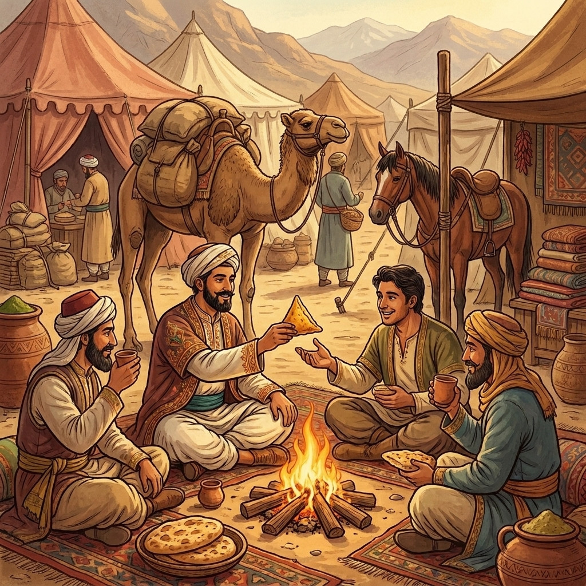
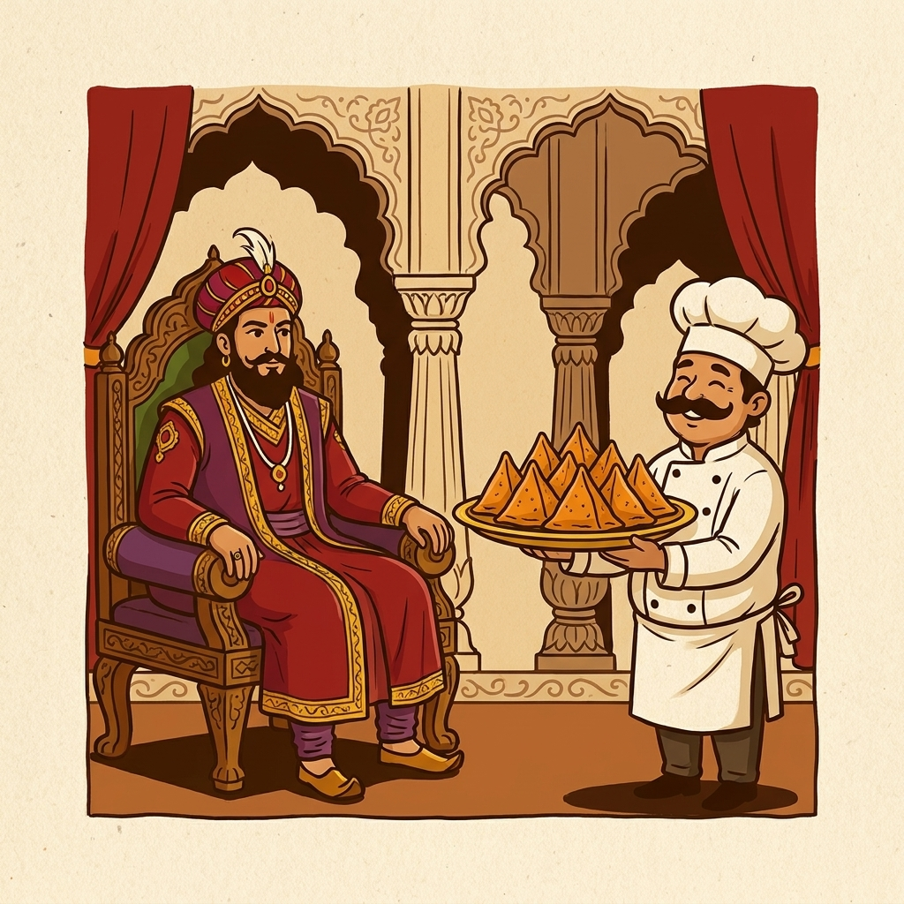
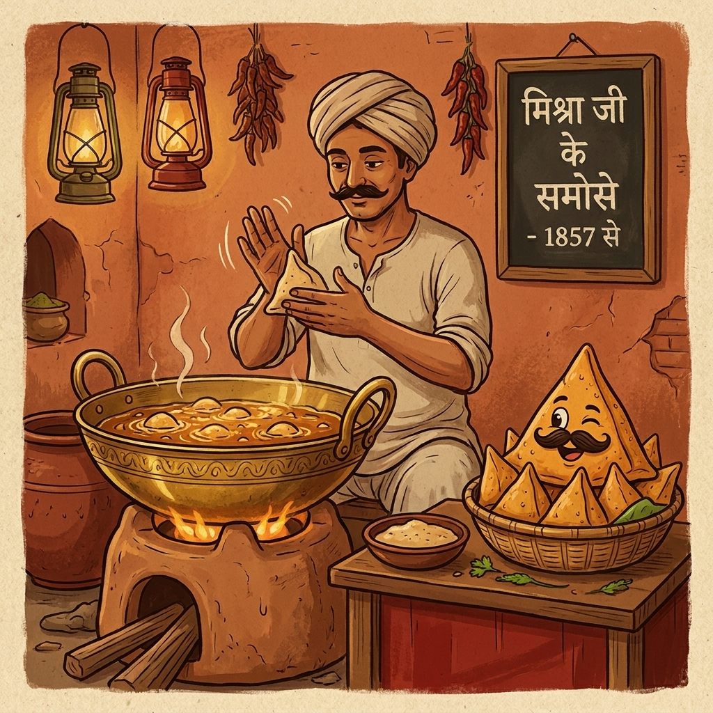
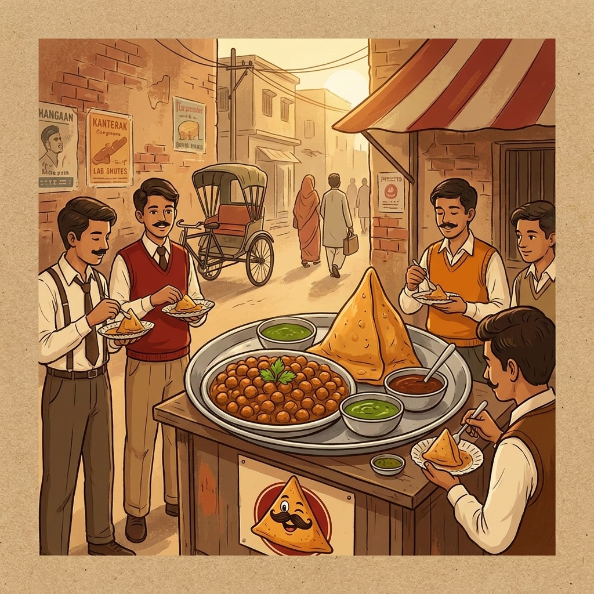
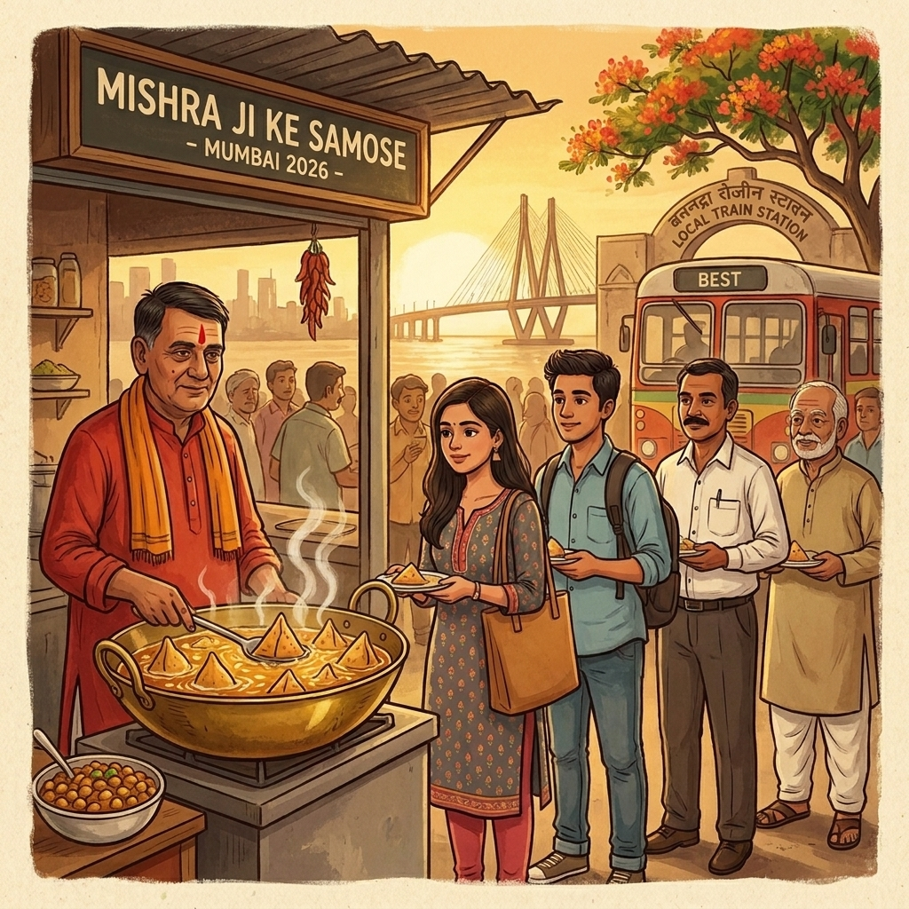

The Story
The samosa didn't start in India.
It walked here, and stayed.
It came in the saddlebags of Persian caravans in the 13th century. Somewhere between Kabul and Kanpur, it stopped travelling. North India kept it, fed it, made it its own.

1It began on the Silk Road
13th century · Persia and Central Asia
A stuffed pastry called sambusa rides the Silk Road on horseback. Cooks in Persia and Afghanistan fry it, bake it, stuff it with lamb and lentils. Somewhere in the 13th century, it crosses the Indus.

2The Sultan's table in Delhi
13th–14th century · Khilji to Tughlaq
Court poet Amir Khusrau records sambusak on Alauddin Khilji's dastarkhwan around 1300. A generation later, Ibn Battuta tastes them at Muhammad bin Tughlaq's court in 1340. He writes home. Three continents now know the samosa.

3The halwais made it Indian
17th–19th century · the Ganga plains
Halwais pack potato inside, layer in kalonji and hing, fry it in mustard oil. By dawn, every UP gully smells the same — hot ghee, warm masala, morning chai.

4Punjab meets Prayagraj
1947 · after Partition
Punjabi refugees pour east into UP, bringing chole with them. One winter morning, a halwai cracks a samosa open and pours hot chole over it. The chole samosa is born.

5Mishra Ji lands in Mumbai
2026 · Kharghar
Same brass kadhai his father used. Same masala the family has ground for three generations. Same one rule — samosa hits the oil only when you order.
By the time chole met samosa in an Allahabad gully, the samosa had already lived seven centuries.
We're just carrying the story forward.